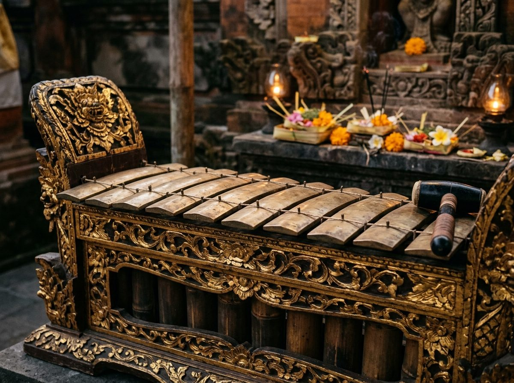

Gamelan selonding
Bilah besi tempa di Desa Tenganan Pegringsingan
Ansambel kuno di Bali yang memakai bilah besi tanpa bumbung bambu peredam, dipakai pada upacara di desa adat Tenganan.
Bahan besi tempa, 7 nada kuno, upacara Dewa Yadnya
Abad ke-10